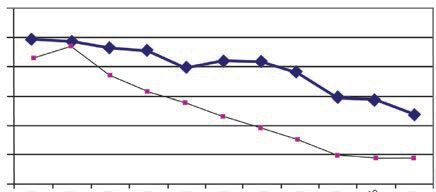

<!DOCTYPE html>
<html lang="en">
<head>
  <meta charset="utf-8">
  <meta name="viewport" content="width=device-width, initial-scale=1.0">
  <title>Chapter 5 (Pages 87-104) - Class 9 Basic_science</title>
  <style>

:root {
  --bg-color: #fcfcfd;
  --card-bg: #ffffff;
  --text-color: #1e293b;
  --text-muted: #64748b;
  --primary-color: #0284c7;
  --primary-light: #e0f2fe;
  --border-color: #e2e8f0;
  --radius: 10px;
  --shadow: 0 4px 6px -1px rgb(0 0 0 / 0.05), 0 2px 4px -2px rgb(0 0 0 / 0.05);
}

body {
  font-family: -apple-system, BlinkMacSystemFont, "Segoe UI", Roboto, "Noto Sans Malayalam", "Manjari", "Gayathri", sans-serif;
  background-color: var(--bg-color);
  color: var(--text-color);
  line-height: 1.8;
  font-size: 1.1rem;
  margin: 0;
  padding: 0;
}

.container {
  max-width: 860px;
  margin: 0 auto;
  padding: 2.5rem 1.5rem 5rem 1.5rem;
}

header {
  margin-bottom: 2.5rem;
  padding-bottom: 1.5rem;
  border-bottom: 2px solid var(--border-color);
}

.badge-row {
  display: flex;
  gap: 0.5rem;
  margin-bottom: 0.75rem;
  flex-wrap: wrap;
}

.badge {
  display: inline-block;
  font-size: 0.75rem;
  font-weight: 700;
  text-transform: uppercase;
  letter-spacing: 0.05em;
  padding: 0.25rem 0.65rem;
  border-radius: 9999px;
  background: var(--primary-light);
  color: var(--primary-color);
}

.badge-medium {
  background: #fef3c7;
  color: #b45309;
}

.badge-class {
  background: #dcfce7;
  color: #15803d;
}

h1 {
  font-size: 2.1rem;
  font-weight: 800;
  margin: 0.5rem 0 1rem 0;
  line-height: 1.3;
  color: #0f172a;
}

.nav-bar {
  display: flex;
  justify-content: space-between;
  margin: 1.5rem 0;
  font-size: 0.95rem;
  flex-wrap: wrap;
  gap: 0.5rem;
}

.nav-bar a {
  color: var(--primary-color);
  text-decoration: none;
  font-weight: 600;
  padding: 0.5rem 1rem;
  border-radius: var(--radius);
  background: var(--card-bg);
  border: 1px solid var(--border-color);
  transition: all 0.2s ease;
}

.nav-bar a:hover {
  background: var(--primary-light);
  border-color: var(--primary-color);
}

.nav-bar .disabled {
  color: var(--text-muted);
  pointer-events: none;
  border-color: transparent;
  background: transparent;
}

.page-section {
  background: var(--card-bg);
  border: 1px solid var(--border-color);
  border-radius: var(--radius);
  box-shadow: var(--shadow);
  padding: 2rem;
  margin-bottom: 2.5rem;
}

.page-header {
  display: flex;
  align-items: center;
  justify-content: space-between;
  margin-bottom: 1.25rem;
  padding-bottom: 0.5rem;
  border-bottom: 1px dashed var(--border-color);
}

.page-number {
  font-size: 0.8rem;
  font-weight: 700;
  text-transform: uppercase;
  color: var(--text-muted);
  letter-spacing: 0.05em;
}

.page-content p {
  margin: 0 0 1.25rem 0;
  white-space: pre-wrap;
  word-break: break-word;
}

.page-content p:last-child {
  margin-bottom: 0;
}

.diagram-card {
  margin: 2rem 0;
  text-align: center;
  background: #f8fafc;
  border: 1px solid var(--border-color);
  border-radius: var(--radius);
  padding: 1rem;
  overflow: hidden;
}

.diagram-card img {
  max-width: 100%;
  height: auto;
  border-radius: calc(var(--radius) - 4px);
  display: inline-block;
  box-shadow: 0 2px 4px rgba(0,0,0,0.04);
}

.diagram-card figcaption {
  font-size: 0.85rem;
  color: var(--text-muted);
  margin-top: 0.75rem;
  font-weight: 500;
}

footer {
  margin-top: 3rem;
  padding-top: 2rem;
  border-top: 2px solid var(--border-color);
}

  </style>
</head>
<body>
  <div class="container">
    <header>
      <div class="badge-row">
        <span class="badge badge-class">Class 9</span>
        <span class="badge badge-medium">English Medium</span>
        <span class="badge">Basic science</span>
        <span class="badge">Part 1</span>
      </div>
      <h1>Chapter 5 (Pages 87-104)</h1>
      <div class="nav-bar"><a href="part_1_chapter_04.html">← Chapter 4 (Pages 67-86)</a><a href="index.html">☰ Index</a><span class="nav-bar disabled"></span></div>
    </header>
    <main>
      <section class="page-section" id="page-87">
  <div class="page-header"><span class="page-number">Page 87</span></div>
  <figure class="diagram-card" id="fig_ch05_p087_01"><figcaption>Figure fig_ch05_p087_01 (Page 87)</figcaption></figure>
  <figure class="diagram-card" id="fig_ch05_p087_02"><figcaption>Figure fig_ch05_p087_02 (Page 87)</figcaption></figure>
  <figure class="diagram-card" id="fig_ch05_p087_03"><figcaption>Figure fig_ch05_p087_03 (Page 87)</figcaption></figure>
  <figure class="diagram-card" id="fig_ch05_p087_04"><figcaption>Figure fig_ch05_p087_04 (Page 87)</figcaption></figure>
  <figure class="diagram-card" id="fig_ch05_p087_05"><figcaption>Figure fig_ch05_p087_05 (Page 87)</figcaption></figure>
  <figure class="diagram-card" id="fig_ch05_p087_06"><figcaption>Figure fig_ch05_p087_06 (Page 87)</figcaption></figure>
  <figure class="diagram-card" id="fig_ch05_p087_07"><figcaption>Figure fig_ch05_p087_07 (Page 87)</figcaption></figure>
  <figure class="diagram-card" id="fig_ch05_p087_08"><figcaption>Figure fig_ch05_p087_08 (Page 87)</figcaption></figure>
  <figure class="diagram-card" id="fig_ch05_p087_09"><figcaption>Figure fig_ch05_p087_09 (Page 87)</figcaption></figure>
  <figure class="diagram-card" id="fig_ch05_p087_10"><figcaption>Figure fig_ch05_p087_10 (Page 87)</figcaption></figure>
  <figure class="diagram-card" id="fig_ch05_p087_11"><figcaption>Figure fig_ch05_p087_11 (Page 87)</figcaption></figure>
  <figure class="diagram-card" id="fig_ch05_p087_12"><figcaption>Figure fig_ch05_p087_12 (Page 87)</figcaption></figure>
  <figure class="diagram-card" id="fig_ch05_p087_13"><figcaption>Figure fig_ch05_p087_13 (Page 87)</figcaption></figure>
  <figure class="diagram-card" id="fig_ch05_p087_14"><figcaption>Figure fig_ch05_p087_14 (Page 87)</figcaption></figure>
  <figure class="diagram-card" id="fig_ch05_p087_15"><figcaption>Figure fig_ch05_p087_15 (Page 87)</figcaption></figure>
  <figure class="diagram-card" id="fig_ch05_p087_16"><figcaption>Figure fig_ch05_p087_16 (Page 87)</figcaption></figure>
  <figure class="diagram-card" id="fig_ch05_p087_17"><figcaption>Figure fig_ch05_p087_17 (Page 87)</figcaption></figure>
  <div class="page-content">
    <p>Demographic Trends in India</p>
    <p>Let&#x27;s get familiarised with the different indicators of demography.</p>
    <p>Migration
Birth rate and death
rate
Population Density</p>
    <p>Indicators of
Demography</p>
    <p>Female-Male Ratio
and Child Sex Ratio
Life expectancy
Age Structure
Dependency ratio</p>
    <p>Migration
Listen to the Poem</p>
    <p>Ïz†›ă†š}“›Ğs¡šǡšŒ›Æ
ˆ›Ú¢ˆšsųˆŽ›•sdžƣÇ
‚œ“Ĭ›s›‚ăˆšų
s‚›ă ‚œ“Ĭ›
‚›Ž}›Úc‚šȽšŽ“cˆš}“cÐ
fǠšcˆ›ÚšÅ £“¢šƀ›ǫ›NJœ Ž¢Œ¢†šÄ</p>
    <p>In his poem, Vailoppilly refers to the people from Kerala who went to
Assam in search of work during the Second World War.
You have understood that people of Kerala went to Assam in search of
employment during 1941. Currently people are coming to Kerala from
Assam and other states.</p>
    <p>Standard IX</p>
    <p>87</p>
  </div>
</section><section class="page-section" id="page-88">
  <div class="page-header"><span class="page-number">Page 88</span></div>
  <figure class="diagram-card" id="fig_ch05_p088_01"><figcaption>Figure fig_ch05_p088_01 (Page 88)</figcaption></figure>
  <figure class="diagram-card" id="fig_ch05_p088_02"><figcaption>Figure fig_ch05_p088_02 (Page 88)</figcaption></figure>
  <figure class="diagram-card" id="fig_ch05_p088_03"><figcaption>Figure fig_ch05_p088_03 (Page 88)</figcaption></figure>
  <figure class="diagram-card" id="fig_ch05_p088_04"><figcaption>Figure fig_ch05_p088_04 (Page 88)</figcaption></figure>
  <figure class="diagram-card" id="fig_ch05_p088_05"><figcaption>Figure fig_ch05_p088_05 (Page 88)</figcaption></figure>
  <figure class="diagram-card" id="fig_ch05_p088_06"><figcaption>Figure fig_ch05_p088_06 (Page 88)</figcaption></figure>
  <figure class="diagram-card" id="fig_ch05_p088_07"><figcaption>Figure fig_ch05_p088_07 (Page 88)</figcaption></figure>
  <figure class="diagram-card" id="fig_ch05_p088_08"><figcaption>Figure fig_ch05_p088_08 (Page 88)</figcaption></figure>
  <figure class="diagram-card" id="fig_ch05_p088_09"><figcaption>Figure fig_ch05_p088_09 (Page 88)</figcaption></figure>
  <figure class="diagram-card" id="fig_ch05_p088_10"><figcaption>Figure fig_ch05_p088_10 (Page 88)</figcaption></figure>
  <figure class="diagram-card" id="fig_ch05_p088_11"><figcaption>Figure fig_ch05_p088_11 (Page 88)</figcaption></figure>
  <figure class="diagram-card" id="fig_ch05_p088_12"><figcaption>Figure fig_ch05_p088_12 (Page 88)</figcaption></figure>
  <div class="page-content">
    <p>Chapter 5</p>
    <p>.HUDODFDOOVIRUHLJQZRUNHUV
“JXHVWZRUNHUV” and the world
applauds.
In Kerala, a new word is used to
refer to migrant workers as ‘guest
workers.’</p>
    <p>You have noticed the given news report Have you ever
heard the term ‘guest workers’?
Guest workers have become a part of the Kerala society
today. Today, there are guest workers in every sector
irrespective of urban or rural area. What might be the
reasons for their migration in search of employment?
More information can be added.
z</p>
    <p>Better income</p>
    <p>z</p>
    <p>High social status</p>
    <p>z
z</p>
    <p>7KH+LVWRU\RIPLJUDWLRQLQ.HUDOD
The Malayalam speaking community, even before attaining a common cohesive
identity based on a national consciousness, language and geography had
XQGHUWDNHQGLYHUVHMRXUQH\VLQWHQGLQJPLJUDWLRQDQGHPLJUDWLRQ.HUDOLWHVZHUH
IRUFHGWRZRUNDVVODYHVLQ%ULWLVKFRORQLHV,QWKHÀUVWSDUWRIWKHWKFHQWXU\WKHUH
were coordinated and isolated migrations to the Malabar areas from central and
VRXWKHUQ.HUDOD7KH0DOD\DOHHVWUDYHOOHGZLGHO\WRPDMRU,QGLDQFLWLHVOLNH&#x27;HOKL
Mumbai, Chennai, Kolkatta and this period is an example of population based
mobility. After this, a large-scale exodus from Kerala to the Gulf regions happened.
Malayalees have migrated for employment and permanent settlement to nations
WKDWDUHDWWKHIRUHIURQWRIJOREDOGHYHORSPHQW,WLVVHHQWKDWDVLJQLÀFDQWQXPEHU
of people are leaving Kerala in search of employment and education. Currently
most of the Keralites migrate to nations like Canada, the United Kingdom, the
United States and New Zealand.</p>
    <p>88</p>
    <p>Social Science I</p>
  </div>
</section><section class="page-section" id="page-89">
  <div class="page-header"><span class="page-number">Page 89</span></div>
  <figure class="diagram-card" id="fig_ch05_p089_01"><figcaption>Figure fig_ch05_p089_01 (Page 89)</figcaption></figure>
  <figure class="diagram-card" id="fig_ch05_p089_02"><figcaption>Figure fig_ch05_p089_02 (Page 89)</figcaption></figure>
  <figure class="diagram-card" id="fig_ch05_p089_03"><figcaption>Figure fig_ch05_p089_03 (Page 89)</figcaption></figure>
  <figure class="diagram-card" id="fig_ch05_p089_04"><figcaption>Figure fig_ch05_p089_04 (Page 89)</figcaption></figure>
  <figure class="diagram-card" id="fig_ch05_p089_05"><figcaption>Figure fig_ch05_p089_05 (Page 89)</figcaption></figure>
  <figure class="diagram-card" id="fig_ch05_p089_06"><figcaption>Figure fig_ch05_p089_06 (Page 89)</figcaption></figure>
  <figure class="diagram-card" id="fig_ch05_p089_07"><figcaption>Figure fig_ch05_p089_07 (Page 89)</figcaption></figure>
  <figure class="diagram-card" id="fig_ch05_p089_08"><figcaption>Figure fig_ch05_p089_08 (Page 89)</figcaption></figure>
  <figure class="diagram-card" id="fig_ch05_p089_09"><figcaption>Figure fig_ch05_p089_09 (Page 89)</figcaption></figure>
  <figure class="diagram-card" id="fig_ch05_p089_10"><figcaption>Figure fig_ch05_p089_10 (Page 89)</figcaption></figure>
  <figure class="diagram-card" id="fig_ch05_p089_11"><figcaption>Figure fig_ch05_p089_11 (Page 89)</figcaption></figure>
  <div class="page-content">
    <p>Demographic Trends in India</p>
    <p>From the reasons given above, we can understand what
migration is.
Migration is the permanent or temporary settlement of people from
one region to another. There are mainly two types of migration.</p>
    <p>Internal Migration</p>
    <p>International Migration</p>
    <p>Migration within a country&#x27;s
border is called internal
migration. People of Kerala
going to other states in search
of employment and people
from other states coming
to Kerala are examples of
internal migration.</p>
    <p>Migration across country
borders is generally called
international migration. An
example of international
migration is the movement
of people from India to Gulf
countries and European
countries.</p>
    <p>Migration changes the population structure of an area.
Different types of migration are given below. Identify which
migration they are and add more examples to the list.
z</p>
    <p>Malayalees working in foreign countries</p>
    <p>z</p>
    <p>North Indian workers working in the construction sector in Kerala</p>
    <p>z</p>
    <p>Students going abroad for higher studies.</p>
    <p>Internal migration
z</p>
    <p>International migration
z</p>
    <p>Birth Rate and Death Rate
Birth rate and death rate are important factors in estimating
the population growth of an area.</p>
    <p>Standard IX</p>
    <p>89</p>
  </div>
</section><section class="page-section" id="page-90">
  <div class="page-header"><span class="page-number">Page 90</span></div>
  <figure class="diagram-card" id="fig_ch05_p090_01"><figcaption>Figure fig_ch05_p090_01 (Page 90)</figcaption></figure>
  <figure class="diagram-card" id="fig_ch05_p090_02"><figcaption>Figure fig_ch05_p090_02 (Page 90)</figcaption></figure>
  <figure class="diagram-card" id="fig_ch05_p090_03"><figcaption>Figure fig_ch05_p090_03 (Page 90)</figcaption></figure>
  <figure class="diagram-card" id="fig_ch05_p090_04"><figcaption>Figure fig_ch05_p090_04 (Page 90)</figcaption></figure>
  <figure class="diagram-card" id="fig_ch05_p090_05"><figcaption>Figure fig_ch05_p090_05 (Page 90)</figcaption></figure>
  <figure class="diagram-card" id="fig_ch05_p090_06"><figcaption>Figure fig_ch05_p090_06 (Page 90)</figcaption></figure>
  <figure class="diagram-card" id="fig_ch05_p090_07"><figcaption>Figure fig_ch05_p090_07 (Page 90)</figcaption></figure>
  <figure class="diagram-card" id="fig_ch05_p090_08"><figcaption>Figure fig_ch05_p090_08 (Page 90)</figcaption></figure>
  <figure class="diagram-card" id="fig_ch05_p090_09"><figcaption>Figure fig_ch05_p090_09 (Page 90)</figcaption></figure>
  <figure class="diagram-card" id="fig_ch05_p090_10"><figcaption>Figure fig_ch05_p090_10 (Page 90)</figcaption></figure>
  <figure class="diagram-card" id="fig_ch05_p090_11"><figcaption>Figure fig_ch05_p090_11 (Page 90)</figcaption></figure>
  <figure class="diagram-card" id="fig_ch05_p090_12"><figcaption>Figure fig_ch05_p090_12 (Page 90)</figcaption></figure>
  <figure class="diagram-card" id="fig_ch05_p090_13"><figcaption>Figure fig_ch05_p090_13 (Page 90)</figcaption></figure>
  <figure class="diagram-card" id="fig_ch05_p090_14"><figcaption>Figure fig_ch05_p090_14 (Page 90)</figcaption></figure>
  <figure class="diagram-card" id="fig_ch05_p090_15"><figcaption>Figure fig_ch05_p090_15 (Page 90)</figcaption></figure>
  <figure class="diagram-card" id="fig_ch05_p090_16"><figcaption>Figure fig_ch05_p090_16 (Page 90)</figcaption></figure>
  <div class="page-content">
    <p>Chapter 5</p>
    <p>Birth rate is the number of live births per thousand
of the population.</p>
    <p>,QIDQW
PRUWDOLW\UDWH</p>
    <p>Death rate is the number of deaths per thousand of
WKHSRSXODWLRQLQDSDUWLFXODUDUHDDWDVSHFLÀFWLPH</p>
    <p>Infant mortality
rate is the number
of infants who die
within one year
out of 1000 live
births in a year.</p>
    <p>Population growth is l
calculated based on h
the difference
between birth rate and death rate. Population growth
slows down when the birth rate is low and the death rate
is high. Population increases when the birth rate exceeds
the death rate.
Birth and Death Rate in India 1901-2001</p>
    <p>Maternal
PRUWDOLW\UDWH</p>
    <p>A country&#x27;s high
infant mortality
rate and maternal
mortality rate
are indicators of
backwardness
and poverty of
that country.</p>
    <p>50
40
30
20</p>
    <p>Year</p>
    <p>Birth
Rate</p>
    <p>Death
Rate</p>
    <p>1901
1911
1921
1931
1941
1951
1961
1971
1981
1991
2001</p>
    <p>49.2
48.1
46.4
45.2
39.9
41.7
41.2
37.1
33.9
29.5
26</p>
    <p>42.6
47.2
36.3
31.2
27.4
22.8
19
14.8
12.5
9.8
9</p>
    <p>1996-2001</p>
    <p>1991-96</p>
    <p>1981-91</p>
    <p>1971-81</p>
    <p>1961-71</p>
    <p>1951-61</p>
    <p>1941-51</p>
    <p>1931-41</p>
    <p>0</p>
    <p>1921-31</p>
    <p>10
1911-21</p>
    <p>Maternal
mortality rate is
the number of
women who die
during childbirth
per thousand
births in a year.</p>
    <p>1901-11</p>
    <p>RATE PER 1000 POPULATION</p>
    <p>60</p>
    <p>Observe the table and graph given
DERYH DQG ÀQG RXW WKH WUHQGV RI
birth rate and death rate in India.
Find out the birth rate and death
rate in India as per 2011 census.
Source: SRS Bulletin, Registrar General of
India, 2016, National Commission on
Population, Government of India.
website: http://populationcommission.nic.in/facts1.htm#</p>
    <p>The accuracy of birth and death statistics depends on
reporting these to the relevant agencies. In most countries,
including India, it is mandatory to register births and deaths
on time.</p>
    <p>90</p>
    <p>Social Science I</p>
  </div>
</section><section class="page-section" id="page-91">
  <div class="page-header"><span class="page-number">Page 91</span></div>
  <figure class="diagram-card" id="fig_ch05_p091_01"><figcaption>Figure fig_ch05_p091_01 (Page 91)</figcaption></figure>
  <figure class="diagram-card" id="fig_ch05_p091_02"><figcaption>Figure fig_ch05_p091_02 (Page 91)</figcaption></figure>
  <figure class="diagram-card" id="fig_ch05_p091_03"><figcaption>Figure fig_ch05_p091_03 (Page 91)</figcaption></figure>
  <figure class="diagram-card" id="fig_ch05_p091_04"><figcaption>Figure fig_ch05_p091_04 (Page 91)</figcaption></figure>
  <figure class="diagram-card" id="fig_ch05_p091_05"><figcaption>Figure fig_ch05_p091_05 (Page 91)</figcaption></figure>
  <figure class="diagram-card" id="fig_ch05_p091_06"><figcaption>Figure fig_ch05_p091_06 (Page 91)</figcaption></figure>
  <figure class="diagram-card" id="fig_ch05_p091_07"><figcaption>Figure fig_ch05_p091_07 (Page 91)</figcaption></figure>
  <figure class="diagram-card" id="fig_ch05_p091_08"><figcaption>Figure fig_ch05_p091_08 (Page 91)</figcaption></figure>
  <figure class="diagram-card" id="fig_ch05_p091_09"><figcaption>Figure fig_ch05_p091_09 (Page 91)</figcaption></figure>
  <figure class="diagram-card" id="fig_ch05_p091_10"><figcaption>Figure fig_ch05_p091_10 (Page 91)</figcaption></figure>
  <figure class="diagram-card" id="fig_ch05_p091_11"><figcaption>Figure fig_ch05_p091_11 (Page 91)</figcaption></figure>
  <figure class="diagram-card" id="fig_ch05_p091_12"><figcaption>Figure fig_ch05_p091_12 (Page 91)</figcaption></figure>
  <figure class="diagram-card" id="fig_ch05_p091_13"><figcaption>Figure fig_ch05_p091_13 (Page 91)</figcaption></figure>
  <figure class="diagram-card" id="fig_ch05_p091_14"><figcaption>Figure fig_ch05_p091_14 (Page 91)</figcaption></figure>
  <figure class="diagram-card" id="fig_ch05_p091_15"><figcaption>Figure fig_ch05_p091_15 (Page 91)</figcaption></figure>
  <figure class="diagram-card" id="fig_ch05_p091_16"><figcaption>Figure fig_ch05_p091_16 (Page 91)</figcaption></figure>
  <figure class="diagram-card" id="fig_ch05_p091_17"><figcaption>Figure fig_ch05_p091_17 (Page 91)</figcaption></figure>
  <div class="page-content">
    <p>Demographic Trends in India</p>
    <p>Where do we register births and deaths in rural areas?
Where do we register births and deaths in urban areas?</p>
    <p>Prepare a note discussing how epidemics, famines, and climate
change affect mortality rates.
Find out the birth and death rate in India and Kerala based on
the 2011 census report and write it in your notebook.</p>
    <p>&#x27;HQVLW\3RSXODWLRQ
3RSXODWLRQ GHQVLW\ LV WKH RQH WKDW UHSUHVHQWV WKH PDMRU
socio-economic factors of an area.
The population of an area is the total number of people residing in that
DUHD GXULQJ D VSHFLÀF SHULRG RI WLPH %XW WKH DYHUDJH SRSXODWLRQ SHU
square kilometer is called Density of Population.</p>
    <p>Examine the 2011 Census report and identify the states with the
highest population and population density, and the states with the
lowest. - Prepare the chart and display it in the class.
There are noticeable regional differences in the density of
population in India. According to the 2011 census, Delhi has
the highest population density whereas Arunachal Pradesh
has the lowest.
What are the social problems in
densely populated areas? Complete
the table.
z Lack of open spaces
z Pollution
z Lack of water storage
z Crowding
z
z</p>
    <p>Standard IX</p>
    <p>91</p>
  </div>
</section><section class="page-section" id="page-92">
  <div class="page-header"><span class="page-number">Page 92</span></div>
  <figure class="diagram-card" id="fig_ch05_p092_01"><figcaption>Figure fig_ch05_p092_01 (Page 92)</figcaption></figure>
  <figure class="diagram-card" id="fig_ch05_p092_02"><figcaption>Figure fig_ch05_p092_02 (Page 92)</figcaption></figure>
  <figure class="diagram-card" id="fig_ch05_p092_03"><figcaption>Figure fig_ch05_p092_03 (Page 92)</figcaption></figure>
  <figure class="diagram-card" id="fig_ch05_p092_04"><figcaption>Figure fig_ch05_p092_04 (Page 92)</figcaption></figure>
  <figure class="diagram-card" id="fig_ch05_p092_05"><figcaption>Figure fig_ch05_p092_05 (Page 92)</figcaption></figure>
  <figure class="diagram-card" id="fig_ch05_p092_06"><figcaption>Figure fig_ch05_p092_06 (Page 92)</figcaption></figure>
  <figure class="diagram-card" id="fig_ch05_p092_07"><figcaption>Figure fig_ch05_p092_07 (Page 92)</figcaption></figure>
  <figure class="diagram-card" id="fig_ch05_p092_08"><figcaption>Figure fig_ch05_p092_08 (Page 92)</figcaption></figure>
  <figure class="diagram-card" id="fig_ch05_p092_09"><figcaption>Figure fig_ch05_p092_09 (Page 92)</figcaption></figure>
  <figure class="diagram-card" id="fig_ch05_p092_10"><figcaption>Figure fig_ch05_p092_10 (Page 92)</figcaption></figure>
  <figure class="diagram-card" id="fig_ch05_p092_11"><figcaption>Figure fig_ch05_p092_11 (Page 92)</figcaption></figure>
  <figure class="diagram-card" id="fig_ch05_p092_12"><figcaption>Figure fig_ch05_p092_12 (Page 92)</figcaption></figure>
  <figure class="diagram-card" id="fig_ch05_p092_13"><figcaption>Figure fig_ch05_p092_13 (Page 92)</figcaption></figure>
  <figure class="diagram-card" id="fig_ch05_p092_14"><figcaption>Figure fig_ch05_p092_14 (Page 92)</figcaption></figure>
  <figure class="diagram-card" id="fig_ch05_p092_15"><figcaption>Figure fig_ch05_p092_15 (Page 92)</figcaption></figure>
  <figure class="diagram-card" id="fig_ch05_p092_16"><figcaption>Figure fig_ch05_p092_16 (Page 92)</figcaption></figure>
  <figure class="diagram-card" id="fig_ch05_p092_17"><figcaption>Figure fig_ch05_p092_17 (Page 92)</figcaption></figure>
  <div class="page-content">
    <p>Chapter 5</p>
    <p>Why do some Indian states have a higher
population growth and some have lower?
z Climate</p>
    <p>z Types of soil</p>
    <p>z Topography</p>
    <p>z</p>
    <p>z Availability of water z</p>
    <p>0DOH)HPDOHUDWLRDQGFKLOGVH[UDWLR
7KHPDOHIHPDOHUDWLRLQÁXHQFHVSRSXODWLRQJURZWKDQGLWV
consequences. The male-female ratio in population affects
birth rate, death rate, migration, etc.
Sex Ratio (Sex Ratio) is the number of females per thousand males in
DSDUWLFXODUDUHDGXULQJDVSHFLÀFSHULRGRIWLPH
7KH FKLOG VH[ UDWLR LV GHÀQHG DV WKH QXPEHU RI IHPDOHV SHU 
males in the age group 0-6 years.</p>
    <p>&#x27;HFOLQLQJ0DOH)HPDOHUDWLR&amp;KLOG6H[5DWLRLQ
India 1901 -2011</p>
    <p>Source:</p>
    <p>Year</p>
    <p>Male - Female ratio</p>
    <p>Child sex ratio</p>
    <p>1961
1971
1981
1991
2001
2011</p>
    <p>941
930
934
927
933
940</p>
    <p>960
964
962
945
927
914</p>
    <p>*Census of India 2011 (Provisional) Government of India</p>
    <p>Observe the table, discuss and make notes on the trends in Male - Female
Sex Ratio and Child Sex Ratio in India. Compare the Male - Female ratio
and Child Sex Ratio of Kerala.</p>
    <p>92</p>
    <p>Social Science I</p>
  </div>
</section><section class="page-section" id="page-93">
  <div class="page-header"><span class="page-number">Page 93</span></div>
  <figure class="diagram-card" id="fig_ch05_p093_01"><figcaption>Figure fig_ch05_p093_01 (Page 93)</figcaption></figure>
  <figure class="diagram-card" id="fig_ch05_p093_02"><figcaption>Figure fig_ch05_p093_02 (Page 93)</figcaption></figure>
  <figure class="diagram-card" id="fig_ch05_p093_03"><figcaption>Figure fig_ch05_p093_03 (Page 93)</figcaption></figure>
  <figure class="diagram-card" id="fig_ch05_p093_04"><figcaption>Figure fig_ch05_p093_04 (Page 93)</figcaption></figure>
  <figure class="diagram-card" id="fig_ch05_p093_05"><figcaption>Figure fig_ch05_p093_05 (Page 93)</figcaption></figure>
  <figure class="diagram-card" id="fig_ch05_p093_06"><figcaption>Figure fig_ch05_p093_06 (Page 93)</figcaption></figure>
  <figure class="diagram-card" id="fig_ch05_p093_07"><figcaption>Figure fig_ch05_p093_07 (Page 93)</figcaption></figure>
  <figure class="diagram-card" id="fig_ch05_p093_08"><figcaption>Figure fig_ch05_p093_08 (Page 93)</figcaption></figure>
  <figure class="diagram-card" id="fig_ch05_p093_09"><figcaption>Figure fig_ch05_p093_09 (Page 93)</figcaption></figure>
  <figure class="diagram-card" id="fig_ch05_p093_10"><figcaption>Figure fig_ch05_p093_10 (Page 93)</figcaption></figure>
  <figure class="diagram-card" id="fig_ch05_p093_11"><figcaption>Figure fig_ch05_p093_11 (Page 93)</figcaption></figure>
  <figure class="diagram-card" id="fig_ch05_p093_12"><figcaption>Figure fig_ch05_p093_12 (Page 93)</figcaption></figure>
  <div class="page-content">
    <p>Demographic Trends in India</p>
    <p>Male-female proportion has a crucial role in male-female
balance. Male-female ratio is used to predict population
JURZWKDQGWRHVWLPDWHWKHSRSXODWLRQVL]HLQDQDUHD
What is the male-female ratio in India and Kerala
as per the 2011 census?</p>
    <p>What might be the social problems created by the decreasing
male-female ratio?
z
z
z</p>
    <p>NITI Aayog has put forward efforts to improve the male-female ratio in India.
It has been recommended to the government to focus on the following areas.
z</p>
    <p>Raise awareness about the rights of girls</p>
    <p>z</p>
    <p>Provide better healthcare and education to girls</p>
    <p>z</p>
    <p>Empower women and girls</p>
    <p>/LIH([SHFWDQF\
Every country strives to improve the health of its population
and to reduce mortality rate. Life expectancy is an important
factor in estimating the population growth of an area.</p>
    <p>A person&#x27;s life expectancy is an estimate of how long he lives on
an average. Life expectancy is determined on the basis of death
rate of each age group in a particular area.</p>
    <p>Standard IX</p>
    <p>93</p>
  </div>
</section><section class="page-section" id="page-94">
  <div class="page-header"><span class="page-number">Page 94</span></div>
  <figure class="diagram-card" id="fig_ch05_p094_01"><figcaption>Figure fig_ch05_p094_01 (Page 94)</figcaption></figure>
  <figure class="diagram-card" id="fig_ch05_p094_02"><figcaption>Figure fig_ch05_p094_02 (Page 94)</figcaption></figure>
  <figure class="diagram-card" id="fig_ch05_p094_03"><figcaption>Figure fig_ch05_p094_03 (Page 94)</figcaption></figure>
  <figure class="diagram-card" id="fig_ch05_p094_04"><figcaption>Figure fig_ch05_p094_04 (Page 94)</figcaption></figure>
  <figure class="diagram-card" id="fig_ch05_p094_05"><figcaption>Figure fig_ch05_p094_05 (Page 94)</figcaption></figure>
  <figure class="diagram-card" id="fig_ch05_p094_06"><figcaption>Figure fig_ch05_p094_06 (Page 94)</figcaption></figure>
  <figure class="diagram-card" id="fig_ch05_p094_07"><figcaption>Figure fig_ch05_p094_07 (Page 94)</figcaption></figure>
  <figure class="diagram-card" id="fig_ch05_p094_08"><figcaption>Figure fig_ch05_p094_08 (Page 94)</figcaption></figure>
  <figure class="diagram-card" id="fig_ch05_p094_09"><figcaption>Figure fig_ch05_p094_09 (Page 94)</figcaption></figure>
  <div class="page-content">
    <p>Chapter 5</p>
    <p>Observe the given table.
State/ Union
Territory</p>
    <p>Life expectancy Life expectancy
(male)
(female)</p>
    <p>Kerala</p>
    <p>72.3</p>
    <p>78.0</p>
    <p>Maharashtra</p>
    <p>71.6</p>
    <p>74.0</p>
    <p>3XQMDE</p>
    <p>71.1</p>
    <p>74.7</p>
    <p>Uttar Pradesh</p>
    <p>65.0</p>
    <p>66.2</p>
    <p>Chhattisgarh</p>
    <p>63.7</p>
    <p>66.9</p>
    <p>India</p>
    <p>68.4</p>
    <p>71.1</p>
    <p>Courtesy : NSO, 2022</p>
    <p>As per the &#x27;Women and Men in India Report&#x27; by the National
6WDWLVWLFDO 2IÀFH 162  UHOHDVHG LQ WKH \HDU  WKH OLIH
expectancy of male and female in India during 2015-19, is
68.4 and 71.1 respectively. Meanwhile, life expectancy of
male-female is 72.3 and 78.0 respectively in Kerala.
So many factors contribute to the high life expectancy rate
in Kerala.</p>
    <p>14567
Helpline
number for
the old age.</p>
    <p>z</p>
    <p>High literacy rate and higher education</p>
    <p>z</p>
    <p>Decentralised public health policy</p>
    <p>z</p>
    <p>Cleanliness</p>
    <p>z</p>
    <p>Food availability and public distribution</p>
    <p>The government has been envisaging and implementing
various programmes for the social welfare of the elderly.
There is an increase in the number of people above 60 years
in Kerala. In this context, the state government formulated
the &#x27;State Old Age Policy&#x27; in 2013 to ensure the welfare and
protection of the old age people.</p>
    <p>The Government has implemented various programmes like Pakal
9HHGX9D\RUDNVKD3URMHFW9D\RPLWKUDP3URMHFW$PULWKDP3URMHFW
etc. to address the problem of the old age people. Prepare a brief note
on these and present it in the class.</p>
    <p>94</p>
    <p>Social Science I</p>
  </div>
</section><section class="page-section" id="page-95">
  <div class="page-header"><span class="page-number">Page 95</span></div>
  <figure class="diagram-card" id="fig_ch05_p095_01"><figcaption>Figure fig_ch05_p095_01 (Page 95)</figcaption></figure>
  <figure class="diagram-card" id="fig_ch05_p095_02"><figcaption>Figure fig_ch05_p095_02 (Page 95)</figcaption></figure>
  <figure class="diagram-card" id="fig_ch05_p095_03"><figcaption>Figure fig_ch05_p095_03 (Page 95)</figcaption></figure>
  <figure class="diagram-card" id="fig_ch05_p095_04"><figcaption>Figure fig_ch05_p095_04 (Page 95)</figcaption></figure>
  <figure class="diagram-card" id="fig_ch05_p095_05"><figcaption>Figure fig_ch05_p095_05 (Page 95)</figcaption></figure>
  <figure class="diagram-card" id="fig_ch05_p095_06"><figcaption>Figure fig_ch05_p095_06 (Page 95)</figcaption></figure>
  <figure class="diagram-card" id="fig_ch05_p095_07"><figcaption>Figure fig_ch05_p095_07 (Page 95)</figcaption></figure>
  <div class="page-content">
    <p>Demographic Trends in India</p>
    <p>Which day is observed as World Population Day? Prepare and
display placards showing the messages of World Population Day.</p>
    <p>Population Age Structure
Population composition is an important indicator of the
population age structure.
Age structure of population is the proportion of persons relatively
in different age groups.
Age structure is affected by changes in progress and life
expectancy. Population age structure is the ratio of the
population to different age groups and the proportion of
each group to the total population.
Age group</p>
    <p>Age</p>
    <p>0-14</p>
    <p>Children</p>
    <p>15-59</p>
    <p>Young people</p>
    <p>Above 60</p>
    <p>Elderly</p>
    <p>Source: Technical Group on Population Projections (1996 and 2006) of the National
Commission on Population. http://populationcommission.nic.in/facts1.htm</p>
    <p>The birth and death rates of an area have an effect on the
population age structure of that area. Lack of proper health
care, diseases and other factors that were prevalent in our
country in the past have contributed to lower average
OLIHH[SHFWDQF\$OVRWKHDJHVWUXFWXUHZDVLQÁXHQFHGE\
high infant and maternal mortality rates. However, with
the development of the country, the standard of living
also improved and the life expectancy increased. The age
structure ratio of the relatively older age group is higher
than that of the younger age group. This age structure is
called ageing population.</p>
    <p>Standard IX</p>
    <p>95</p>
  </div>
</section><section class="page-section" id="page-96">
  <div class="page-header"><span class="page-number">Page 96</span></div>
  <figure class="diagram-card" id="fig_ch05_p096_01"><figcaption>Figure fig_ch05_p096_01 (Page 96)</figcaption></figure>
  <figure class="diagram-card" id="fig_ch05_p096_02"><figcaption>Figure fig_ch05_p096_02 (Page 96)</figcaption></figure>
  <figure class="diagram-card" id="fig_ch05_p096_03"><figcaption>Figure fig_ch05_p096_03 (Page 96)</figcaption></figure>
  <figure class="diagram-card" id="fig_ch05_p096_04"><figcaption>Figure fig_ch05_p096_04 (Page 96)</figcaption></figure>
  <figure class="diagram-card" id="fig_ch05_p096_05"><figcaption>Figure fig_ch05_p096_05 (Page 96)</figcaption></figure>
  <figure class="diagram-card" id="fig_ch05_p096_06"><figcaption>Figure fig_ch05_p096_06 (Page 96)</figcaption></figure>
  <figure class="diagram-card" id="fig_ch05_p096_07"><figcaption>Figure fig_ch05_p096_07 (Page 96)</figcaption></figure>
  <figure class="diagram-card" id="fig_ch05_p096_08"><figcaption>Figure fig_ch05_p096_08 (Page 96)</figcaption></figure>
  <figure class="diagram-card" id="fig_ch05_p096_09"><figcaption>Figure fig_ch05_p096_09 (Page 96)</figcaption></figure>
  <figure class="diagram-card" id="fig_ch05_p096_10"><figcaption>Figure fig_ch05_p096_10 (Page 96)</figcaption></figure>
  <figure class="diagram-card" id="fig_ch05_p096_11"><figcaption>Figure fig_ch05_p096_11 (Page 96)</figcaption></figure>
  <div class="page-content">
    <p>Chapter 5</p>
    <p>*LYHQEHORZDUHWKHÀJXUHVRIWKHDJHJURXSLQ,QGLDDVSHU
Census 2011.
Age group of the population Percentage of population
0 – 14 age</p>
    <p>29</p>
    <p>15 – 59</p>
    <p>63</p>
    <p>60 years and above</p>
    <p>8</p>
    <p>Source: Based on data from the Technical Group on Population Projections (1996
and 2006) of the National Commission on Population.
Webpage for 1996 Report: http://populationcommission.nic.in/facts1.htm
z
z</p>
    <p>Which age group has the largest population?
Which age group has the lowest population?
The table shows that India has a high proportion of young
population and a low proportion of elderly people. It
can provide more workforce to the youth and generate
economic growth. For this, the youth needs more emphasis
on education and healthcare. At the same time, more
attention has to be given to the social security and health
care system for the elderly.
Conduct a discussion in your class by identifying the population
age structure of India and Kerala as per the 2011 census and
ÀQGRXWKRZ ROGDJHSHRSOH DIIHFWWKHFRXQWU\DQGWKHVWDWH</p>
    <p>&#x27;HSHQGHQF\5DWLR
A country&#x27;s working age population (active age structure)
comprises of 15 to 64 years of age. Those who are below 15
years and above 64 years belong to the dependent category.
Dependency ratio is the criterion used to compare the
dependent category of population and the working
population.</p>
    <p>96</p>
    <p>Social Science I</p>
  </div>
</section><section class="page-section" id="page-97">
  <div class="page-header"><span class="page-number">Page 97</span></div>
  <figure class="diagram-card" id="fig_ch05_p097_01"><figcaption>Figure fig_ch05_p097_01 (Page 97)</figcaption></figure>
  <figure class="diagram-card" id="fig_ch05_p097_02"><figcaption>Figure fig_ch05_p097_02 (Page 97)</figcaption></figure>
  <figure class="diagram-card" id="fig_ch05_p097_03"><figcaption>Figure fig_ch05_p097_03 (Page 97)</figcaption></figure>
  <figure class="diagram-card" id="fig_ch05_p097_04"><figcaption>Figure fig_ch05_p097_04 (Page 97)</figcaption></figure>
  <figure class="diagram-card" id="fig_ch05_p097_05"><figcaption>Figure fig_ch05_p097_05 (Page 97)</figcaption></figure>
  <figure class="diagram-card" id="fig_ch05_p097_06"><figcaption>Figure fig_ch05_p097_06 (Page 97)</figcaption></figure>
  <figure class="diagram-card" id="fig_ch05_p097_07"><figcaption>Figure fig_ch05_p097_07 (Page 97)</figcaption></figure>
  <figure class="diagram-card" id="fig_ch05_p097_08"><figcaption>Figure fig_ch05_p097_08 (Page 97)</figcaption></figure>
  <div class="page-content">
    <p>Demographic Trends in India</p>
    <p>&#x27;HSHQGHQF\ LQ ,QGLD LQÁXHQFHV WKH HFRQRPLF VWDELOLW\ RI
a country to an extent. By understanding the dependency
ratio, the government can clearly evaluate and formulate
plans in the health care and educational system. It also
helps understand those who need care and welfare, and to
formulate plans accordingly.
As the dependency ratio rises, so does the number of old age
population, which is one of the problems the country faces.
The employable population (between the ages of 15 and 64)
is forced to take up the responsibility of a large segment
of the unemployed. A decrease in dependency ratio also
leads to economic progress of the country. That means the
number of employed people to be more than the number of
the unemployed among the working age population. This
is called the demographic gift or demographic dividend.
This is not stable as the employed population turns to be
incapable to work in due course.</p>
    <p>$GYDQWDJHVRI&#x27;HPRJUDSKLFGLYLGHQG
z The socio-economic progress of the country</p>
    <p>increases
z Productivity of the country increases
z 7KH FRXQWU\ HQMR\V KLJK KXPDQ UHVRXUFH
development
7RUHDSWKHIXOOEHQHÀWVRIWKHGHPRJUDSKLFGLYLGHQGWKH
\RXWK QHHG EHWWHU MRE RSSRUWXQLWLHV 0DQ\ LQLWLDWLYHV DUH
available for this.</p>
    <p>Kerala Startup Mission is the nodal agency of the
government for entrepreneurship development and
activities in Kerala. It started its operations in 2006
head quartered in Thiruvananthapuram to promote
technology based commercial activities.</p>
    <p>Standard IX</p>
    <p>97</p>
  </div>
</section><section class="page-section" id="page-98">
  <div class="page-header"><span class="page-number">Page 98</span></div>
  <figure class="diagram-card" id="fig_ch05_p098_01"><figcaption>Figure fig_ch05_p098_01 (Page 98)</figcaption></figure>
  <figure class="diagram-card" id="fig_ch05_p098_02"><figcaption>Figure fig_ch05_p098_02 (Page 98)</figcaption></figure>
  <figure class="diagram-card" id="fig_ch05_p098_03"><figcaption>Figure fig_ch05_p098_03 (Page 98)</figcaption></figure>
  <figure class="diagram-card" id="fig_ch05_p098_04"><figcaption>Figure fig_ch05_p098_04 (Page 98)</figcaption></figure>
  <figure class="diagram-card" id="fig_ch05_p098_05"><figcaption>Figure fig_ch05_p098_05 (Page 98)</figcaption></figure>
  <figure class="diagram-card" id="fig_ch05_p098_06"><figcaption>Figure fig_ch05_p098_06 (Page 98)</figcaption></figure>
  <figure class="diagram-card" id="fig_ch05_p098_07"><figcaption>Figure fig_ch05_p098_07 (Page 98)</figcaption></figure>
  <figure class="diagram-card" id="fig_ch05_p098_08"><figcaption>Figure fig_ch05_p098_08 (Page 98)</figcaption></figure>
  <figure class="diagram-card" id="fig_ch05_p098_09"><figcaption>Figure fig_ch05_p098_09 (Page 98)</figcaption></figure>
  <figure class="diagram-card" id="fig_ch05_p098_10"><figcaption>Figure fig_ch05_p098_10 (Page 98)</figcaption></figure>
  <figure class="diagram-card" id="fig_ch05_p098_11"><figcaption>Figure fig_ch05_p098_11 (Page 98)</figcaption></figure>
  <figure class="diagram-card" id="fig_ch05_p098_12"><figcaption>Figure fig_ch05_p098_12 (Page 98)</figcaption></figure>
  <figure class="diagram-card" id="fig_ch05_p098_13"><figcaption>Figure fig_ch05_p098_13 (Page 98)</figcaption></figure>
  <div class="page-content">
    <p>Chapter 5</p>
    <p>Discuss and prepare a note on what should be taken care of for
,QGLDWRDFKLHYHWKHEHQHÀWVRIGHPRJUDSKLFGLYLGHQG
,QGLD VSRSXODWLRQLV\RXQJ7KDWLVWKHPDMRULW\KHUHDUH
young people. Human resource development is crucial
for the sustainable development of the country. In this
chapter we discussed population trends such as birth rates,
migration, age structure, male-female ratio, dependency
ratio, population growth rate, life expectancy, etc. In
GHPRJUDSKLF GLYLGHQG ZKLOH HQVXULQJ WKH EHQHÀW RI WKH
youth, the protection of the dependents should also be
considered.</p>
    <p>1DWLRQDO3RSXODWLRQ3ROLF\
Even before independence, plans to control India&#x27;s growing population began
DV SDUW RI QDWLRQDO PRYHPHQWV $IWHU LQGHSHQGHQFH ,QGLD EHFDPH WKH ÀUVW
developing country to introduce a government-sponsored family planning
SURJUDPPH ,Q  ,QGLD V ÀUVW 1DWLRQDO 3RSXODWLRQ 3ROLF\ FDPH LQWR EHLQJ
After that, under Dr. M.S. Swaminathan&#x27;s leadership, a new National Population
Policy was drafted based on long-term achievements. Based on that, the current
1DWLRQDO3RSXODWLRQ3ROLF\FDPHLQWRHIIHFWLQ7KHORQJWHUPREMHFWLYHRI
the National Population Policy 2000 is that by 2045, the population should be
streamlined in such a way as to strengthen sustainable economic growth, social
progress and environmental protection.
Courtesy : National Population Policy 2000 Published by Govt of India</p>
    <p>The human resource potential of the country can achieve
personal, social and economic well-being by utilising the
full range of knowledge and skills of each individual.
Sustainable development can only be achieved if India&#x27;s
population growth, available resources and environmental
capacity are utilised for the needs of the present generation
DQG PDQDJHG LQ D PDQQHU WKDW LV EHQHÀFLDO WR IXWXUH
generations.</p>
    <p>98</p>
    <p>Social Science I</p>
  </div>
</section><section class="page-section" id="page-99">
  <div class="page-header"><span class="page-number">Page 99</span></div>
  <figure class="diagram-card" id="fig_ch05_p099_01"><figcaption>Figure fig_ch05_p099_01 (Page 99)</figcaption></figure>
  <figure class="diagram-card" id="fig_ch05_p099_02"><figcaption>Figure fig_ch05_p099_02 (Page 99)</figcaption></figure>
  <figure class="diagram-card" id="fig_ch05_p099_03"><figcaption>Figure fig_ch05_p099_03 (Page 99)</figcaption></figure>
  <figure class="diagram-card" id="fig_ch05_p099_04"><figcaption>Figure fig_ch05_p099_04 (Page 99)</figcaption></figure>
  <figure class="diagram-card" id="fig_ch05_p099_05"><figcaption>Figure fig_ch05_p099_05 (Page 99)</figcaption></figure>
  <div class="page-content">
    <p>Demographic Trends in India</p>
    <p>([WHQGHG$FWLYLWLHV
z Visit the website www.censusindia.gov.in and gather more information</p>
    <p>related to population.
z Collect news about areas in Kerala where human resource decline is</p>
    <p>happening due to international migration, and prepare a collage.
z</p>
    <p>Visit the website of Ministry of External Affairs and collect the statistics of
migration from India and prepare a chart and display it.</p>
    <p>z</p>
    <p>&lt;RXPD\ÀQGWKHIHPDOHPDOHUDWLRRIRWKHUVWDWHVIURPWKH162ZHEVLWH
(https://mospi.gov.in)? Why is there a difference in the female-male ratio
in different states? You may discuss and present it in your class?
Discussion points</p>
    <p></p>
    <p>z</p>
    <p>Female foeticide</p>
    <p></p>
    <p>z</p>
    <p>Preferential attitude towards boys</p>
    <p></p>
    <p>z</p>
    <p>Inadequate healthcare</p>
    <p>z</p>
    <p>Kerala Government is implementing many schemes for improving the
male-female ratio in Kerala and for the upliftment of women and children.</p>
    <p></p>
    <p>z</p>
    <p>Helping Hand</p>
    <p>z</p>
    <p>Hope</p>
    <p>z</p>
    <p>Viva Kerala</p>
    <p>Collect the details of the above and prepare a brief note.
z</p>
    <p>Organise a seminar on population growth in Kerala. The seminar paper
should be prepared considering the conceptual areas given below.</p>
    <p></p>
    <p>z</p>
    <p>Population of Kerala - District with highest population</p>
    <p></p>
    <p>z</p>
    <p>Population Density of Kerala - District with lowest population</p>
    <p></p>
    <p>z</p>
    <p>Migration - Domestic and International</p>
    <p></p>
    <p>z</p>
    <p>Birth and death rate</p>
    <p>Standard IX</p>
    <p>99</p>
  </div>
</section><section class="page-section" id="page-100">
  <div class="page-header"><span class="page-number">Page 100</span></div>
  <figure class="diagram-card" id="fig_ch05_p100_01"><figcaption>Figure fig_ch05_p100_01 (Page 100)</figcaption></figure>
  <figure class="diagram-card" id="fig_ch05_p100_02"><figcaption>Figure fig_ch05_p100_02 (Page 100)</figcaption></figure>
  <figure class="diagram-card" id="fig_ch05_p100_03"><figcaption>Figure fig_ch05_p100_03 (Page 100)</figcaption></figure>
  <figure class="diagram-card" id="fig_ch05_p100_04"><figcaption>Figure fig_ch05_p100_04 (Page 100)</figcaption></figure>
  <figure class="diagram-card" id="fig_ch05_p100_05"><figcaption>Figure fig_ch05_p100_05 (Page 100)</figcaption></figure>
  <figure class="diagram-card" id="fig_ch05_p100_06"><figcaption>Figure fig_ch05_p100_06 (Page 100)</figcaption></figure>
  <figure class="diagram-card" id="fig_ch05_p100_07"><figcaption>Figure fig_ch05_p100_07 (Page 100)</figcaption></figure>
  <div class="page-content">
    <p>Chapter 5
</p>
    <p>z</p>
    <p>Life expectancy</p>
    <p></p>
    <p>z</p>
    <p>Age structure</p>
    <p></p>
    <p>z</p>
    <p>Population, Dividends</p>
    <p>z</p>
    <p>100</p>
    <p></p>
    <p>z</p>
    <p>z</p>
    <p>Make notes on social characteristics of demography.</p>
    <p>z</p>
    <p>9LVLWWKHZHEVLWHRIWKH0LQLVWU\RI([WHUQDO$IIDLUV 0R($ DQGÀQGWKH
statistics of migration from India to other countries and display it on a
chart.</p>
    <p>Social Science I</p>
  </div>
</section><section class="page-section" id="page-101">
  <div class="page-header"><span class="page-number">Page 101</span></div>
  <div class="page-content">
    <p>Notes</p>
  </div>
</section><section class="page-section" id="page-102">
  <div class="page-header"><span class="page-number">Page 102</span></div>
  <div class="page-content">
    <p>Notes</p>
  </div>
</section><section class="page-section" id="page-103">
  <div class="page-header"><span class="page-number">Page 103</span></div>
  <figure class="diagram-card" id="fig_ch05_p103_01"><figcaption>Figure fig_ch05_p103_01 (Page 103)</figcaption></figure>
</section><section class="page-section" id="page-104">
  <div class="page-header"><span class="page-number">Page 104</span></div>
  <figure class="diagram-card" id="fig_ch05_p104_01"><figcaption>Figure fig_ch05_p104_01 (Page 104)</figcaption></figure>
</section>
    </main>
    <footer>
      <div class="nav-bar"><a href="part_1_chapter_04.html">← Chapter 4 (Pages 67-86)</a><a href="index.html">☰ Index</a><span class="nav-bar disabled"></span></div>
      <p style="text-align: center; font-size: 0.85rem; color: var(--text-muted); margin-top: 2rem;">
        Kerala SCERT Class 9 Basic_science (English Medium) - Extracted Study Text
      </p>
    </footer>
  </div>
</body>
</html>
